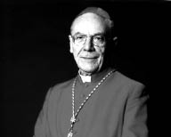

KARDİNAL PAUL POUPARD
Üç papanın, XXIII. Jean, VI. Paul ve II. Jean-Paul'ün faaliyetlerinin tanığı olma ayrıcalığına sahip Kardinal Paul Poupard (1930 yılında Angevinli bir bağcı ailesinin oğlu olarak doğdu), II. Jean-Paul'ün eski kültür bakanıdır ve son derece bilgili biri olmakla ünlenmiştir. Yazılarından bazıları farklı dillere çevrilmiştir. Katolik kilisesinin içinde dinler arasında açılım ve diyalog iradesinin temsilcisidir. Eğitim konusundaki, kültür ile inanç ilişkileri konusundaki, kilise ile devlet ilişkileri hakkındaki görüşlerinin derinliğiyle değer kazanmıştır. 1954 yılında papazlık rütbesi verilir, Paris piskopos yardımcısı ve 1979 yılında Usula asil piskoposu olarak atanır. 1979 yılında İnançsızlarla Diyalog Papalık Meclisi başkanı olur ve 1988 yılında Papalık Kültür Meclisi görevleri de ona emanet edilir. Bu iki mevki 1993 yılında birleştirilir. Halen bu görevleri yerine getirmektedir. XVI. Benôit'nın seçiminden sonra Kardinal Poupard Dinlerarası Diyalog İçin Papalık Meclisi başkanlığına bir yıllığına atanır. Aralarında Les Religions'un (PUF) da bulunduğu çok sayıda eserin yazarıdır. Devasa bir eser olan Dictionnaire des religions'un (PUF, 20007) editörlüğünü yapmıştır.

POUPARD
Görünüşe bakılırsa, geleneksel ahlaki ve dinsel değerler karşısında büyüyen bir ilgisizliğin damgasını taşıyan ve insanın hakikatle yüzleşmeyi başaramadığı bir dönemde yaşıyoruz. Sizin düşünceniz nedir?
Kaygı verici bir olgudan söz ediyorsunuz, mevcut haliyle insan tamamen ilgisiz olamasa da bu böyle. Binyılcı değerlere karşı büyüyen bir ilgisizlik olduğu kesin, çünkü geçici değerlere gösterilen dikkat büyüyor. Dikkat gösterilecek olasılıklar sınırlandığından, Paul Ricœur'ün araçlar aşırı gelişirken amaçların körelmesi diye tanımladığı şey ortaya çıkıyor. Son sürat kırların arasına dalmış, makinistin de hakim olamadığı bir trenin içindeyiz. "Nereye gittiğimizi bilmiyorum ama gittiğimiz kesin," diyordu bir politikacı. Bu sözde ironi var, ama aynı zamanda trajik bir şeyler olduğunu da sanıyorum.
Jacques Maritain'in ya da Gabriel Marcel'in trajik eserinin sözünü ettiği kültler metafiziğine bugün sahip değiliz...
Paris'te genç bir papazken Gabriel Marcel'in Saint-Germain Bulvarı'ndaki evinde yemek yemiştim ve gecenin geç vakitlerine kadar sürmüş olan o sohbeti hâlâ hatırlarım. O muhteşemen Homo viator. Prolégomènes à une métaphysique de l'espérance'ın yazarı yaşlı adamda, varlık yitimi olarak gördüğü şey karşısında bir kuşku, daha doğrusu bir kaygı, sıkıntı vardı. Şair Pierre Emmanuel de ölümünden kısa süre önce bana şöyle demişti: "Sanki bir varlık amnezisi içindeyiz..."
Milyonlarca genç papayı ziyaret etmek için toplanıyor. Bu, gerçek bir tinsellik ihtiyacını göstermiyor mu?
Dünya çapındaki bu gençlik günlerine ben de katıldım. Büyük Din Dersi denen şeyi benim hazırlamamı istemişlerdi. Ben de Saint-Roch Kilisesi'ne gittim. Düzenleyiciler biraz tedirginlikle uyarılarını tekrarlıyorlardı: "Kimse olmayacak." Ben vardığımda, oğlanlar, kızlar yere oturmuştu, yüzlerinde ve tavırlarında bir beklenti okunuyordu, Simone Weil'in dediği gibi, hakikat beklentisi. Bana önerilmiş olan İncil metni Himalaya'nın güney yamacı gibiydi, İsa ile genç zenginin karşılaşması. Sonsuz yaşama kavuşmak için ne yapması gerektiğini sorar. İsa der ki, "gel, beni izle!", ama genç adam, zengindir, çekip gider, üzüntü içinde. Bu mesel çağımız kültürünün bir sembolüdür. Birçok genç onların yaşındayken benim sahip olmadığım sayısız mala mülke sahip, ama belki de ben annemin Noel dolayısıyla vermiş olduğu küçük mavi balonumla onlardan daha mutluydum, savaş dönemiydi. Bu küçük mavi balon aylarca benimleydi ve onu seviyordum çünkü annemin sevgisiydi o. Belki de bizim dünyamız bu açıdan öksüz... İncil'deki sonsuz mutluluğun yolunu tekrar buluyoruz – "ne mutlu yoksullara, çünkü göklerdeki krallık onlarındır." Çünkü yoksul yoksul olduğunu bilir, mevsimlerin art arda gelmesini sağlayan, ırmakların denize dökülmesini ve güneşin sisi dağıtmasını ve sonra da sisin toprağı verimli kılmak için yeniden çökmesini sağlayan zamanın akışını sürdürmediğini bilir. Sistematik bir antagonizma oluşturmayayım ama, şunu söyleyebilirim ki, mal varlığı bakımından oldukça yoksun insanlarla konuştuğumda, genellikle onların daha fazla mala mülke sahip olanlardan daha çok var olduklarını görürüm.
Latin Amerika'da milyonlarca insan özgürlük teolojisi denen bu büyük harekete katıldı. Geriye dönüp baktığınızda, bu hareketin önde gelen kişileri olmuş Peru'da Gustavo Gutiérrez ya da Brezilya'da Helder Camara ve Leonardo Boffi gibi kişileri nasıl anlamak gerekir?
Latin Amerika'yı, güney ucundan kuzey ucunca dek uzanarak tek başına bir kıta eden o kocaman Brezilya'dan geçerek ziyaret ettim. Özgürlük teolojisi olarak adlandırılan şeyin ortaya çıktığı dönemde, son derece Hristiyan bir toprakta bunun doğduğunu ve aynı zamanda da bir kaygı çığlığı olduğunu görmek beni çok şaşırttı. İnsanların ve halkların ıstıraplarını kimi zaman aşırı bir biçimde paylaşan teologların çığlığı; öyle ki Katolik hiyerarşi burada, Roma'da bile bu durumdan kaygı duydu. Ama birkaç yıl ardan sonra Vatikan, İsa'nın kurtarıcı rolünü hatırlatan bir belge yayımlayarak ilk baştaki mahkûmiyetten vazgeçti. İşgal döneminde, Jean Anouilh, "karanlık piyes"lerinin sonuncusu, isyankâr vicdanın gerçek sesi olan Antigone'u yazdığında, Fransa misyonundan bir din adamı İncil'in yeni bir tercümesini halk dilinde Kurtarıcı adıyla yayımlıyordu. Dolayısıyla, kimi zaman miyopluğun yenilik olarak keşfettiğini sandığı şey aslında geleneğin unsurlarından birinin yeniden canlanması olur. İncil mesellerinin dinamiği içinde, İsa'nın İsrail halkını burayı işgale gelmiş kötü Romalılardan kurtarmak için gelmediğini öğreniyoruz, ama o İsrail halkını insan kalbinin içindeki kötülükten ve günahtan kurtulmaya davet etmişti. Ve adaletsizliklerin temelinde de bu günah bulunur. Bu özgürlük teolojisinde de epey yol kat edildi ve şimdi orada ifade edilen şeyi herkesin barışçıl biçimde anladığını sanıyorum. Geçen ay Pueblo de Los Angeles'teydim ve ilk günün sabahı Notre-dame de Guadalupe'taki ayine katılmaya gittim. Yerli görünümündeki bakirenin hem kültürel hem de tinsel bir kimlik verdiği, keza büyük bir haysiyet duygusu da kazandırdığı halkların coşkusunu gördüm. Brezilya'ya gittiğimde beni çarpan şey insanlığın bu zenginliğidir. Bir gün, Copacabana sahilinde beyaz bir şekil gördüm. Onun bir işat olduğunu söylediler, hem Bakire Meryem hem de deniz tanrıçası. Bunun anlamı, aşağılanan bu halkların Hristiyan inancını asla derinden inanmadan benimsedikleridir. Binyıl bilgeliği ayıklama yapma olanağını her zaman bulamadı ve bir anlamda, tamamen farklı gerçeklikleri tek bir imge içinde birleştirmek zorunda kaldı. Hristiyan olan ben, Aziz Yuhanna'daki İsa'nın olağanüstü bulduğum şu sözüne, deyim yerindeyse, sığınıyorum: "Tanrı'nın kalbi bizim kalbimizden daha büyüktür." Bu halk litürjilerine her katıldığımda bunu düşünürüm. Bütün bu kültürlerin, çeşitli biçimlerde ifade bulan son derece güçlü bir yaşam duyusu olduğunu sanıyorum. Bunlar arasında toprak ana, güneş ve ışık figürleri yer alır. Sonra kana susamış bu tanrıların trajik sapmaları vardır, sitenin temellerini atmak için çocukların kanlarını isterler. Anti-hümanist bu pratikler karşısında Hristiyanlığın kurtarıcı olduğu kanısındayım. Benim derin inançlarımdan biri budur, yani her kültürde, tıpkı her insanın kalbinde olduğu gibi, onun insanlığını oluşturan şey bulunur, bir de insanlıkdışılığın yamaçları vardır. Ama bu antik kültürlerin özgünlüğü değildir; bunu bütün kültürler hakkında söyleyebiliriz.
Bilimlerle birlikte insanın dinin ve aşkınlığın içsel deneyim dünyasından kaçtığı kanısında mısınız?
Kısa ömrümün birkaç yılını, Galileo'dan beri ortaya konduğu haliyle inanç ile bilimler arasındaki bu diyaloğa adadım. Ve Kutsal Baba benden 350 yıl mesafeden bu puslu ve acılı dosyayı aydınlatmaya çalışmamı istedi. Bu konuda yayımladığım son kitabın adı tam da Galileo Galilei, Tarihin 350 Yılı'dır. O dönemde, Galileo gibi bilim insanlarının, bilimsel kanıt getirtemeseler de, Ptolemeus'un bin yıllık kozmolojisinin hatasını nasıl görebildiklerini daha iyi kavramayı başardığımız kanısındayım. Ve o sırada kısa ama çok esinli bir yazısını keşfettiğim Kardinal Bellarmin gibi inanç insanları şunu söylüyordu: Yeni hipotez bilimsel olarak sağlam temellere dayanıyorsa, bizim Kutsal kitap okuma tarzımızda yanıldığımızı kabul etmenin, yanlış bir şeyin doğruluğuna inanarak gülünç duruma düşmekten daha iyi olur... Bence böyle bir söylem inanç ile bilim arasındaki bu diyaloğun mihenktaşıdır. Kendimizi hakikatin içinde buluruz. Kimse sonsuzca kuşkunun içinde yaşayamaz, ne bireyler, ne milletler, ne kültürler, ne uygarlıklar. İnsanlık, soru sormak için burada. Ve Sokrates-öncesi filozoflardan bu yana, dünyanın seyrinden büyülenmemizin gerekçesi, ressam Gauguin'in Tahitili kadınlarıyla ölümsüzleştirdiği üç soruya cevap vermek içindir: Biz kimiz? Nereden geliyoruz? Nereye gidiyoruz? Bu durumda, bilimden söz ettiğimizde, bildiğim pek az şey, bilim değil bilimler olduğunu söylememi sağlar. Fizik var, müspet bilimler var, beşeri bilimler var, aynı zamanda bu bilimlerin içinde epistemolojiler var... Ve bilimler, tek kelimeyle söylersek, "nasıl" üzerine bize her zaman daha fazla şey öğretirken, "niçin" konusunda her zaman cahil bırakır. İnsan ruhu, "nasıl"dan "niçin"e geçmedikçe asla huzur bulmaz. Düzenlediğim bir kolokyumda, katılımcı bilim adamlarından birine, son derece güzel ve derinlikli bulduğum Einstein'ın şu sözünü yorumlamasını söyledim: "Esrarı çözmeyen zekâ ışığı görmemiş göz gibidir." Einstein şunu da der: "En anlaşılmaz olan şey, evrenin anlaşılır olmasıdır." Ve bu bizi çok uzağa götürüyor...
Kozmosta olduğu gibi maddi dünyanın içinde de görülen düzen ve güzellik hakkında ne diyorsunuz? Bir bilim insanı yüksek düzeydeki bir zekânın, hatta fizikçi Freeman Dyson'un ve ondan önce de Albert Einstein'ın kendilerine sordukları gibi, evrenin varoluşunun bile ötesinde bulunan bir zekânın varlığını anlayabilir mi?
Papalık Bilim Akademisi'yle birlikte bilginlerden ve kültür insanlarından oluşan bir topluluğu, bilim ile kültür arasındaki etkileşimi –çatışkıyı değil– düşünmek üzere bir araya getirdim. Eski Yunanlılardan miras aldığım şu derin inanç içindeyim: İnsan makrokozmos içindeki bir mikrokozmostur. İnsanın düşman bir doğada kendini yabancı hissetmemesini sağlayan da budur, ama Tekvin'in birinci bölümünün gösterdiği gibi, insan bütün bu harika şeyleri idare etmekle görevli olarak Yaratıcı Tanrı tarafından oluşturulmuştur. Ve burada modern sapmalar üzerine düşünebiliriz. İnsan, ünlü ifadeyle, bir mülk sahibi ve doğanın efendisi değil de bir kâhya olduğunu unuttu değil mi? Doğaya borçlu olduğumuz bütün saygı sorunlarını burada buluruz. Ama insanın yavaş yavaş keşfettiği dünyanın düzenlenmesi içinde, sonsuz küçük ile sonsuz büyüğü dikkatle incelemek ve ikisi arasında ilişkiler, başdöndürücü köprüler kurmak bilimin özüdür... Kuantum fiziği ile atom fiziği sayesinde bilim, bizim yüzeysel bakışımızda hareketsiz bir yapı olarak gözüken şeyin aslında sürekli bir hareketle nasıl devindiğini görebilir. Peki bütün bunlar tesadüfün ve zorunluluğun ürünü müdür?
Bu yalnızca uygar bir insana yakışmayan bir cehalet itirafıdır.
İnsan binyıl sonunu genellikle bir kıyamet görüntüsüyle birlikte düşündü. İnsanın milyonlarca yıllık evrimi dikkate alındığında, bu yirmi birinci yüzyıl başının bir dönüm noktası olduğu söylenebilir mi?
Chicago'daki bir kampuste Apocalypse Now filmini seyrettiğimde son derece şaşırdım. Kendi kendime dedim ki: Amerikalıların bile "kıyamet"in "felaket"in eşanlamlısı olmadığını unutmaları için ne yapmış olabiliriz? Yunancadan tercüme bir kelime bu, Patmos kâhini Aziz Yuhanna'nın görüsünden geliyor ve zamanların sonunda duyurulan yeni toprağı bir felaket olarak değil, bir yıkım olarak değil, bir vaat olarak belirtiyor. Bunlar yeni göklerdir ve içinde ne yas, ne ağlama, ne çığlık, ne de gözyaşı olan yeni topraktır. Dolayısıyla tekvinden kıyamete giden ve kayıp cennetten yeniden kavuşulan cennete giden zamanın meselinin tersidir. Ama insanın hayalgücü şiirsellikten düzyazıya düşmüştür; eğer bu imgeyi kullanmama izin verirseniz. Eğer bir aşçı beni dinliyorsa, aklına omlet karşılaştırması gelecek. Biliyorsunuz, iki ucundan kesilirse omlet tabağa düşer. İşte: başlangıç ve son unutuldu. Sanıyorum Tekvin'in ilk üç bölümü ile Kıyamet'in [Diriliş Günü] son üç bölümünü yeniden okumalıyız...
Sorumsuz bir tüketim açlığı içinde, insan dayanışmasının ve bunu savunan felsefelerin yokoluşuna mı vardık bugün?
Evet, bu biraz önce amaçların körelmesi ve araçların aşırı gelişmesi konusunda söylediklerimize yakın. Burada sanıyorum bir tür ödünleyici oburluk var. Ama, kişisel olarak, dönüp dolaşıp Tekvin'in birinci bölümüne geliyorum, burada Tanrı kendi yaratısına seviniyor. "Ve Tanrı bunun iyi olduğunu gördü." Erkeği ve kadını yarattığında da aynı. Bütün sefaletlere rağmen, kötülüğe rağmen, her erkeğin ve her kadının kalbinde, her kültürün ve her uygarlığın kalbinde bir tohumun bulunduğuna ve bunun meyve vermesinin de bize bağlı olduğuna eminim. Ben sanatçılara rastladığımda, daha önce yaptığım gibi, onlara şunu söylüyorum: "Bizim öncellerimiz olan büyük transendantalların felsefesine geri dönmek gerekir." Yani unum ve bonum ve verum ve pulchrum. İyi, güzel, doğru ve bir çakışıyor. Ve kötülük yitimden geliyor. Bizim kültürümüz bu temel bağdaşıklığı bulmak zorunda. "Yükselen her şey benzeşir" diyordu Teilhard de Chardin. Haklıydı. Ve kendi aralarında çatışan bütün insanların hepsinin aynı beşeri aileye mensup olduklarının, babanın Tanrı olduğunun ve dolayısıyla hepsinin kardeş olduklarının bilincine varmalarını sağlamaya hiç durmadan nasıl çabalamamız gerektiğini görüyoruz. Ve sanıyorum bu, yeni binyıl için bize açılan büyük bir insanlık yoludur.
Paul Ricœur'ün üzerinde düşündüğü gibi, insan mitler olmadan yaşabilir mi?
Bu bakış açısından, Heidegger'dense Platon'a bağlanmak gerektiği kanısındayım. Platon logos'tan ziyade mythos'ta daha fazla felsefe olduğunu söylüyordu. Miti ifade eden sözdense mitte her zaman daha fazla felsefe vardır. Ve Hristiyan açısından, et verb logos sarx egenesen'i –kelam tenden olur– düşünmek büyüleyicidir. Kelamın kendisi de tanrısal iletisini aktarmak için mesel aracılığıyla ifade bulur. Bu benim inancımdır ve büyük dinlerin içinden geçtiği krizi gördüğümde, bunun az da olsa ifadelerinin rasyonelleşmiş olmasından kaynaklandığını düşünüyorum. Sembollerin anlamını yitirdiler. Paris'te, sizin biraz önce andığınız bir milyon gencin buluşması sırasında, Longchamp'da alna damlatılan su, ışık ve yağ gibi bunca basit bu sembollerin anlaşılmak için büyük açıklamalara nasıl ihtiyaç duymadıklarını gördüm. Bu anlayışa geri dönmemiz gerekir ve bizim kültürümüzün, hakikat taşıyıcısı bu kültürün doğru denemeyecek bir şeye dönüştüğüne dikkat etmek gerekir. Benim sözünü ettiğim mitler yanlış anlamında mitsel bir şey değilken ve tersine, hakikatin tamlığı anlamına sahipken, logos, kelam egemen olmayı başaramaz.
Geçmiş yüzyıllarda bir David Hume'un kuşkuculuğu, bir Bentham'ın yararcılığı ile modern dünyanın büyüyen mekanikçi materyalizmi arasında sıkı bir bağ yok mudur?
Terimler değişebilir: pragmatizm, kuşkuculuk, materyalizm, bu "-izm"ler listesini uzatabiliriz ve diğer yandan, ben kendi açımdan, "-izm" dolayısıyla akrabalığın bu hapsine oldukça karşıyım. Shakespeare gibi ben de, fazlasıyla saygı duyduğum, çoğu zaman da dostluk duyduğum felsefe kitaplarının dışında daha fazla felsefe olduğuna canıgönülden inanıyorum. Ama varoluşun gündelikliğine sürekli geri dönerek sonsuzluk boyutunu orada kavramamız gerekir. Bir süre önce sinemacı Theo Angelopoulos'la konuşuyordum, Sonsuzluk ve Bir Gün'ü birlikte izlemiştik. Bu filmde, zamanın içinde zaten mevcut olan sonsuzluğa dair çok güçlü bir algı var. Hristiyan iletinin tüm özü de bu. Eylemin saygınlığı insanın kendi sorumlu özgürlüğünü edimlerinde temsil etmesinden ve bunlardan sorumlu olmasından kaynaklanır. Özne, dilbilgisi terimleriyle söylersek, fiil ve dolaylı, dolaysız tümleç arasındaki bağı oluşturması gereken çok büyük bir eğitim görevi bugün bize düşmektedir. Zaplama dilbilgisi kullanan gençlere yardım ettik; bu kelimeden nefret ediyorum, daha çok da olayın kendisinden. Onlar bilincinde değil, hoşlarına gideni arıyorlar. Bir imgenin karşısında buluyorlar kendilerini, ama bunun bir sekans içinde bulunduğunu bilmiyorlar. Ve belki de kültürümüzün dramı buradadır: an, sonsuzluktan gelip sonsuzluğa giden zaman boyutunu unutturur. Ben, kiliseye daha az gidilirken haccın yaygınlaşması karşısında şaşkınlığa düştüm. Hac, doğrudanlığı terk etmekten ve yaşamın büyük sorunlarıyla karşılaşmaktan ibaret. Yaklaşan büyük günah çıkarma örneği bu ve sanıyorum çok önemli bir düşünce doğurtucu işlev taşıyor. Hac, Anouilh'un bir başka kara piyesinin adını kullanırsak, "valizsiz yolcu"yu yeniden keşfetmeyi sağlayan güçlü bir zamandır. Modern insan biraz bu yolcuya benzer, şeylerle doludur ve valizi yoktur. Bu gündelik doluluğu terk etmek, temel valizin zorunluluğunu yeniden keşfetmeyi sağlar. Benim inancım budur.
Darwin'in anladığı anlamda insanın evrimi teorisi kilise dogmalarıyla çelişmiyor mu?
Kilise ne diyor? Ben daha ziyade Pascal'ın öğrencisiyim, büyüklük mertebelerini, düşünce mertebelerini birbirinden ayırıyorum. Madde mertebesi var, tin mertebesi var, sevgi mertebesi var, merhamet mertebesi var. Ve sanıyorum ki, minnacık çocuklar bile bunu büyük insanlar kadar iyi anlayabilir, benim Angevin'deki köyümdeki bağcı da Sorbonne'daki profesör de anlayabilir. Kilise, bilim insanlarının evrimsel olguları incelerken gerçekleştirdikleri her şeye dair düşüncesini ifade etti. Ve sanıyorum bu incelemelerin nazik ucu, dünyada bir değil çok evrim olması. Siz de benim kadar iyi biliyorsunuz, evrimcilikten söz edilemez: teoriler birbirini izliyor, kitaplarımız onunla dolu ve her bilimsel teori, sanılanın tersine, her zaman için bir öncekinin hiçbir şey anlamadığını ya da en azından özü kavramadığını söyleyerek işe başlıyor. Bu durumda bilimlerdeki ilerlemeden söz edildiğinde, bunun doğrusal bir ilerleme olmadığı, sıçramalı, redlerden ve yeniden keşiflerden ibaret bir ilerleme olduğu unutuluyor. Kilisenin söylemek istediği şey, hiç kuşkusuz, evrimle ilgili bütün bu bilimsel incelemelerin önemini son derece güçlü, şiddetli, yenilenmiş bir düşünceyle fark etmesidir. Bu açıdan bizim belleğimiz hiç durmadan fantastik boyutlara doğru genişliyor. Zaman daima büyüyor. Afrika'daki son keşifler ilk insanın keşfini bilmem kaç milyon yıl öncesine götürüyor. Bu tamamen etkileyici bir şey. Bununla birlikte, yanılmıyorsam eğer, big-bang olsun ya da olmasın, başlangıç noktası açısından daima giderek küçülen bir parçaya varacağız. Ama bilim asla çıkış noktasına vardırmaz. Zamanın ardışıklığı içinde yer almalıyız, yoksa başlangıcında değil.
Bu binyıl başında kozmik düzeni fiziksel dünyaya nasıl bağlayabiliriz?
Sanıyorum burada hayalgücü açısından çok ilginç bir şey var, çünkü, mutlak anlamda, binyıl sonsuzca tartışabileceğimiz aritmetik bir uzlaşımdan başka nedir ki? Önemi yoktur. Belirli bir anda bu sembolik rakam dikkat çeker. O zaman, belki de 2000 yılının sembolikliği tıpkı 1000 yılınınki gibi bizi Malraux'nun İnsanlığın Durumu'nda söylediği şeye götürür. Angelopoulos'un filminde olduğu gibi, bu eser de bize makrokozmosun içindeki mikrokozmosu gösteriyor. Ve sanıyorum ki, sonuçta, kültürün aynı zamanda doğanın insanlaşması olmasını da sağlayan bu boyutu sözün içinde bulabilmek için daha çok şey yapmamız gerekiyor. Binyıl mı? 1000 yıl civarındaki eski kroniklerde Hristiyanlığın kilisenin beyaz mantosuyla örtülü olduğu görülür. İkinci binyılda neden böyle olmasın? Benim dileğim bu.
Günümüzde, yeni bir bilgelik arayışından, insan-Tanrı arayışından, yani insan varlığının tanrısallaştırılmasından ve tanrısalın insanla özdeşleştirilmesinden söz ediliyor. Tanrısal insan ve insan yapan Tanrı, bu, Ortaçağ metafiziğini ve Aydınlanma sonrası zamanları izleyen yeni bir hümanizma biçimini mümkün kılar mı?
Sizin sorunuzda birçok soru var. Bilginin çeşitli düzeyleri üzerine biraz önce söylediklerimi tekrarlayacağım. Ben Auguste Comte'a ve onun insanlık tarihini, teoloji, felsefe ve nihayet bilim diye ardışık üç çağa bölmesine karşıyım. O gerçekten yanıldı. Ben Dinler Sözlüğümde Mircea Eliade'ye büyük bir yer ayırdım. Ona göre insan yalnızca homo faber, homo ludens değil, aynı zamanda homo religiosus'tur. Din, olası etimolojilerinden birini alırsanız, religare'dir, karşı karşıya getiren değil birleştirendir. Dolayısıyla, gökyüzüyle yeryüzünü birleştirendir, insanla Tanrı'yı birleştirendir. Ve sanıyorum ki, dünyanın bütün kültürlerini ve dinlerini aklınızdan geçirirseniz, sonuç olarak bunların tek bir soruya, tek bir beklentiye, tek bir arzuya cevap verdiklerini görürsünüz. Bunu İtiraflar'ının ilk satırlarında Aziz Augustinus'tan daha iyi kimse ifade etmedi sanıyorum: "Sen bizi senin için yarattın Efendimiz, kalbimiz sende huzur bulana dek huzur yüzü görmeyecek." İnsan Tanrı'dan geliyor ve Tanrı'ya doğru gidiyor. Malraux'ya, aşkınlık arayışındaki bilinemezciye ve daha başkalarına Dinler Sözlüğü'nde bir makale ayırmak istedim. Ortak dostumuz olan, Malraux'nun kurduğu Alsace-Lorraine müfrezesinde papaz, ardından Strasbourg katedrali başrahibi Pierre Bockel'in muhteşem kitabı L'enfant du rire'in (Kahkaha Çocuğu) önsözüne Malraux şunu yazdı: "İntihar etmek içinse Ay'a gitmek neye yarar?" Binyıl için, ikincisi için temel ilk soru bu. Malraux hep bunu sorar: "Aşkınlık olmadan ortaklık nasıl olur?"Asla üniversiteye gitmemiş, tek bir felsefe kitabı okumamış her insanda metafizik bir boyut olduğu kanısındayım. Çünkü günümüzde, tıpkı binlerce yıl önceki gibi, erkek ve kadın kendi yaşamlarını buna dair fikirlerine göre düzenliyorlar. Peki ya felsefe nedir, erkeğe, kadına, aşka, çalışmaya, ıstıraba, ölüme dair belli bir fikir edinmekten başka nedir? Önemli sorular yıpranabilir ama asla yok olmaz. Ve bütün kültürler, tıpkı bütün dinler gibi, bu temel sorulara cevap vermeye çalışırlar. Elbette ben falcı değilim geleceği öngöremem! Gelecek, trene bakan öküzler gibi yapılamaz diyordu Georges Bernanos, ama yapılır. Başka deyişle, gelecek bizim sorumlu özgürlüklerimize bağlıdır. Bunlar çok farklı yöne gidebilir. Ama insan eyleminin zemininde zamandan sonsuza doğru oluşumu vardır hep. Ve, kadının kışkırttığı erkeğin iyilik ve kötülük ağacı arasında seçim yapmak istediği Tekvin'in birinci bölümünde bile ifade bulan bu arzunun cevabı çoğu zaman bilinçsizce de olsa Tanrı'nın yerini almaktır. 1893 yılında eylem üzerine tezinde bunu en iyi ifade eden belki de Maurice Blondel'di. Giriş bölümü şöyledir: "Her insan Tanrı olmayı düşler, ama tanrısız Tanrı, tanrıya karşı ya da tanrıyla birlikte Tanrı." Sanıyorum ki siz, burada, insanlık tarihinde birbirini izlemiş bütün kültür ve uygarlıkları tanımladınız. Ve inançlı insan için –ve bu benim için bir iman sorunudur– Tanrı kendini insan yapar ki insan da Tanrı olsun diye. Ve böylece bütün insanlığın düşünü gerçekleştirir, çünkü o Tanrı'dır, Ezeli Baba'nın sahici oğludur ve insandır, Bakire Meryem'in sahici oğludur. Filozoflar ve teologlar bizim bu inanç entelektüelliği dediğimiz şeyi yapmaya devam etseler de, sanıyorum bütün teoloji ve felsefe kitaplarından çok bu basit olumlamada bulunur felsefe ve teoloji.
Biyogenetiğin, nanoteknolojinin, sayısal devrimin etik sorumluluğunu günümüzde nasıl üstlenebiliriz?
Sanıyorum bu daha önce ortaya attığımız temel soruya geri dönmekle eşanlamlı: İnsan nedir? Malraux'nun bir yerlerde yazdığı gibi, "sefil bir küçük sır yığını" mıdır? Bense, Pascal'ın öğrencisiyim, daha önce de dedim: İnsan insanı sonsuzca geçer. İnsanda insandan fazlası vardır. Bugün bizim en büyük sorunumuz, inanç birliğini yitirmiş olmamızdır. İnsanlık tarihinin bütün dönemleri çatışmalıdır. Ama geçmişte, verili bir kültürel ortamın içinde, derin bir oybirliği vardı, Hristiyanlığınki, İslam dünyasınınki, Hindu dünyasınınki, Şintoist, Taocu, Budist dünyanınki. Artık bu çokluğun eşzamanlılığını yaşıyoruz. Ve çokluktan çoğulculuğa geçtik. Yani bir çokluk olgusunun saptanmasından bir tür çoğulculuk ideolojisine geçtik. Jacques Maritain ise insanlığın yıkım durumunda olduğumuzu söylüyordu: Her konuda faklılaşıyoruz, her konuda ayrışıyoruz, dolayısıyla insanı yeniden keşfetmemiz gerekiyor. Hatırlayın, soğuk savaşın başlangıç dönemiydi bu. Başka deyişle, görüşlerin çatıştığı bu yıkım durumunda, Papalık Kültür Merkezi'nde geçirdiğim yıllarımı adadığım ve üzerinde kafa patlattığım "eksiksiz insanlık" dediğim bu şeyi yeniden bulmamız gerekiyor. Bunun yanında, 2000 yılı ufukta olmak üzere, bilimleri, felsefeyi, teolojiyi dine katacak yeni bir hümanizmayla birlikte, sanatın estetik boyutunu da unutmamalı... çok önemli bu.
Sanatta örneğin Joseph Beuys ya da Mark Rothko'nun büyük bir tinselliği olmadığını mı düşünüyorsunuz? Ayrıca Giacometti de var, yeni-gerçekçi filmler var, Pasolini'nin Mama Roma ve Accatone'si, Roberto Rosselini'nin Roma Açık Şehir'i ya da günümüzde Manoel de Oliveira'nın, Angelopoulos'un filmleri ve başka birçok film, örneğin Fellini'nin Il Bidone'si ya da Cabiria Geceleri ya da Vittoria De Sica'nın filmleri Bisiklet Hırsızları veya Umberto D., veyahut Pablo Neruda'nın Yirmi Aşk Şiiri. Bunlarda makul bir tinsel bakış yok mudur?
Öncelikle Malraux'nun bir başka sözüyle cevap vereceğim, fazla sık alıntı yaptığımı biliyorum, o sanatı "mutlaklığın parası" diye adlandırır. Bu sözcüklerde her şeyin söylenmiş olduğunu sanıyorum: Mutlaklık duygusunu yitiren insan bunu sanatta bulmaya çalışır ama bunu başaramaz çünkü bu imkânsızdır. Ben bu açıdan daha öteye gidiyorum, çünkü benim için, güzellik, hakikat, birlik yolları vardır –bu konuda biraz önce büyük transendantal düşünürlerden söz ettik. Güzelliğin yolunun hakikate götüren ayrıcalıklı bir yol olduğu kanısındayım. New Yorklu sanatçılarla yaptığım kolokyumdaki keşiflerimden biri, soyut sanatta biçimlerin tüketemediği bir sonsuzluk arayışının da olabileceğidir. Bu büyük bir sohbet konusu olabilir. Geçen hafta Yunanistan'daydım ve bir kez daha Akropolis'e çıktım, Delphi'ye gittim, müzeleri ziyaret ettim. Apollon suskundu, ama mesaj antik tapınağın alınlığında yazılı duruyordu: "Kendini bil." Bir süre önce Ravenne'de Dante'ye adanmış sanatsal bronz heykeller bienaline başkanlık ettim. Sanatçılar, bu kadar az malzemeyle sonsuzu ve mutlağı ifade edebiliyorlar... Ve sanıyorum sanat maddeyi tinselleştirebildiği için, güzellik sayesinde hakikate giden bir yoldur. Böylece, uygarlığımızın yöneldiği tinin maddileşmesinin güçlü bir panzehridir. Birkaç yıl önce Tokyo'dan Kyoto'ya kutsal dağdan giderken Sina Dağı'nın fasicilens et tremendo'sunu düşünüyordum: Orada beliren Tanrı'nın dağla bir bağı vardır. İnsan kendi içindeki kutsallık payı ile bütün insan yaşamındaki kutsallık payını bilme ihtiyacı duyar; ne kadar küçümsenmiş olsa da, olabilecek en yoksul çocuğun, olabilecek en hasta ihtiyarın kutsallığı... Kişide kutsallık özelliği vardır, Hristiyan açısından bu kutsallık Tanrı'nın yaratıcı edimi içinde erir –insan, her erkek, her kadın, farkında olmadan bile olsa, Tanrı'nın esrarının ve sonsuzluğunun bir yansısını taşır.
Viyana'dan Kardinal Schönborn yakın dönemde New York Times'ta soruyu sordu ve tartışmayı başlattı: İnanç, evrime bir anlam verebilir mi?
Yaratılış hikâyesinde dünyanın bütün felsefelerinden daha fazlası var. Tanrı, insanı kendi imgemizden ve benzerimizden yaratalım dediğinde, hiçten yola çıkarak yaratmıyor. Maddeyi alıyor, öyle değil mi? Adem, çamurdur. Bunun anlamı kilisenin madde ile tin arasında daima bir ilişki kurmuş olduğudur. Ama Tanrı insanı yarattığında, tinini üfledi. Sanırım bu yüzyılın tarihi, özellikle de Nazizm ve Marksizm-Leninizm trajedisiyle birlikte, toplama kampları ve Gulag'la birlikte şunu göstermektedir ki, insan Tanrı'nın imgesi ve benzeri olduğunu unuttuğunda, her zaman için aşkın ve saygıdeğer bir özne olduğunu da unutur ve diğer insanlara nesne muamelesi yapar. Tekrar ediyorum, insanda her zaman, en yoksullar ve en yoksunlar da dahil, insan olmanın bu gururu olacaktır. Biliyorsunuz, size Maldoror Şarkıları'nı referans göstereceğim için özür dilerim, benim kullanacağım bir referans değil: "Bana erkekle kadının oğlu olduğum söylendi, ben daha fazlası sanıyordum."
Yirminci yüzyılın büyük bahtsızlıklarından söz ettiniz, Nazizmin, Stalinizmin kurbanları... Ama kimi zaman büyük güçlerin savaşı Kore'ye, Vietnam'a, Etiyopya'ya, Burundi'ye ihraç ettikleri unutuluyor... Tanrı niçin bunca kötülüğü ve ıstırabı kabul ediyor şeklinde bir ilahiyat sorusu sorulur.
İlahiyat bir sorunsalın içindedir... Sorunsal düzleminde tatminkâr cevap yoktur. Bence, ancak esrar düzeyinde cevap vermek mümkündür. Ve insanı yaratan, çarmıha dek insanlık durumunu ona üstlendiren ve böylece her ikisini de, hem ıstırabı hem ölümü dönüştüren şey bu Tanrı'nın esrarıdır. Meryem çarmıhın dibinde ayaktadır, günümüzdeki birçok kadın gibi, çarmıhın dibinde duran ve soruya cevapları olmayan ve bu esrarı sevginin içinde yaşayandır. Bundan başka boyut yoktur.
Bunun anlamı, sevgi metafiziğinin, Octavio Paz'ın yazmış olduğu gibi, yaşamın anlamı sorusuna bir çözüm bulabilecek durumda olduğu mudur?
Sevgi Aziz Yuhanna'da ilk sözcüktür. Ben her zaman diyorum: Tanrı sevgidir, Tanrı varlıktır, Tanrı... Sokrates-öncesi filozoflardan bu yana bir yığın felsefi tanım alabiliriz, ama kesin olarak, eğer Tanrı sevgi değilse, intikamcı olarak, yargıç olarak, ne isterseniz öyle karşımıza çıkabilir. Eğer sevgiyse bu her şeyi değiştirir. Sanırım burada varlıkların esrarının ortasındayız, çünkü her insan varlığı daima iki sevginin meyvesidir, erkeğin ve kadının sevgisinin. Bu dölleyici edim öncelikle Yaratıcı'nın sevgisidir, insanları sevgi içinde yaşayabilir kılan odur. Ve belki de bizi çağımızın mutsuzluğundan kurtaracak olan şey bu bilinçtir: sevgi olmadan kimse yaşayamaz. Çağımızın dramı, kabaca söylendiği gibi, çocuk sahibi olmadan sevişmek isteyen ve bu durumu kompanse edecek her şeyin kendilerine verildiği insanlardır. Ama sevgi yokluğu asla kompanse edilemez. Bence ilk ve son sözcük budur: sevgi.
İnançlı bilim insanı var mıdır?
Bildiğiniz gibi, Not Defterleri'nin sonundaki Paul Valéry'dir bu. Birkaç yıl önce yayımladığım Biz İsa Mesih'e İnanıyoruz adlı bir kitapta dostum olan birkaç bilim insanının tanıklığını istedim. Örneğin, Bilimler Akademisi'nin daimi sekreteri olan Paul Germain. Sanıyorum, bilim ile inanç arasındaki bu sahte karşıtlıktan çıkmamız gerekiyor. Bilim ile inanç başka düzenlerdir; birinin inançlı olup olmamasına bağlı olarak, bilim bir engel de olabilir, tersine yardımcı bir unsur da. Çokanlamlılık işte beni burada etkiledi. Belirli bir aforizmaya asla sığınamayız. Şu da denmiştir: "Bilimin azı Tanrı'dan uzaklaştırır, çoğu Tanrı'ya götürür." Bu genellikle doğrudur, her zaman diyemem. Sonuç olarak, hayatta önemli olan şey, yazar olmak, filozof olmak, devlet adamı olmak, kuantum fiziği uzmanı olmak değil, insan olmaktır. Kozmonotlar geri döndüğünde hanımlarını evde bulurlar, bütün insanların neşesi ve sorunları aynı. İnsanlık durumu budur.
Günümüzde çocukların sevgisinden söz ettiniz... Yeryüzünün kimi bölgeleri için, Afrika, Asya ve Latin Amerika için "Çocuk sahibi olmamalı" diyen istatistikler, yoksulluk ve açlık ile "Çocuk sahibi olmaktan asla kaçınmamalı" diyen Katolik kilisesi arasındaki bu çelişkiyi nasıl çözümleyebiliriz?
İlk söyleyebileceğim şey, bilinenin tersine, kilisenin doğum artışından yana olmadığıdır. Kilise, "ne pahasına olursa olsun çocuk sahibi olun" demiyor. İkinci saptama, kilise şunu söylüyor: "Bencilce bir tavır benimseyip, pasta sınırlı, konuk sayısını azaltalım dememek gerek. Bencilliği aşalım ve pasta dilimlerini daha fazla paylaşalım." Üçüncüsü, kilise şunu da söylüyor: "Yaratıcılığı unutmayın." Üstelik babalarımızın bilmediği ama bizim bugün bildiğimiz sayısız olasılık var. Siz istatistiklerden söz ettiniz, bunların hepsinin yalan söylediğini ileri sürecek değilim, ama bana göre, Mathusalem yaşına henüz erişmemiş olan bana göre, istatistikler, en resmileri de olsalar, başta Birleşmiş Milletler'inkiler olmak üzere, her zaman düşük tutulmuştur. Yani ben öğrenciyken öngörülen demografik bomba patlamadı. Buna karşılık, patlayan başka bombalar var. Biliyorsunuz benim formasyonum tarih: Demografik atılım giderek daha uyumlu. Ben Quebec'e gittiğimde rektör beni karşılayıp dedi ki: "Babamın on beş kız ve erkek kardeşi vardı, benim de on tane var ve torunlarımdan bazılarının ise hiç kardeşi yok." Tamam. Bu demektir ki doğum düzenlemesi diye bir şey var, oluşuyor, bir dengesizlik evresinden sonra, dün Üçüncü Dünya diye adlandırdığımız ve bugün utanarak gelişmekte olan dünya dediğimiz yerde oluşuyor.
Parisli dostlarım ben Bangkok'tan, Bangalor'dan, Marakeş'ten ya da Salvador de Bahía'dan döndüğümde beni etkileyenin ne olduğunu sorduklarında, orada olağanüstü gözlerle bakan birçok güzel çocuğa rastladığımı söylüyorum. Médicis sokağında, Luxembourg parkında ise köpeklerini gezdiren hanımlar görüyorum, değil mi? Tamam... O zaman, dünyanın geleceğinin gezdirilen bu köpeklerden ziyade, gördüğüm bu çocuklarda olduğunu düşünüyorum. Köpekleri hiç aşağılıyor değilim elbette. Ama demek istediğim şu ki, atık çocuk yapmayan bir dünyada sevgiyi korumak güç. Sevgi ile çocuklar arasında içkin bir bağ var. Ve erkekle kadının evlilik ilişkileri kısırlaştığında bir uygarlık kısırlaşıp, tükeniyor. Halkların gelişimi üzerine Populorum Progressius papalık genelgesini uluslararası basına sunmamı papa benden istediğinde –1967 yılındaki ilk basın konferansımdı benim– bu sorumlu babalığa bir çağrıydı. O zamandan beri görüş değiştirmedim. İnsanlığın sorumlu bir özgürlük uygulayabileceği kanısındayım, çünkü evrende sayısız şeye hakim olabiliriz, demografiye de hakim olabiliriz.
Katolik kilisesi gelecekte Küba, Çin, İsrail gibi ülkelerde ya da İslam ülkelerinde barış politikası konusunda nasıl bir rol oynayabilir?
İzin verirseniz mutfakla ilgili bir karşılaştırma yapacağım: Kilise pasta üzerine biraz çilek koyuyor, diyebiliriz. Kilise politika yapmıyor. Ama politikaya bu ilave ruhu verebilir ve bu ruh olmadan politika batağa saplanır. İlk saptamam bu. İkinci saptamam 1967 yılında Vatikan üzerine çıkan ilk kitabımda mevcut. Birçok kişinin kaynağını bilmeden onu kullandığını görmek ilginç: Kilise politika yapmaz, eğer yaparsa istemeyerek yapar. Yine de, en azından Fransızcada, politikayı politikacıdan ayırmak isterim. Kilise politika yapmamak anlamında politikacılık da yapmaz. Ama politika yapanlar genellikle kiliseyle çatışmalı ilişki içindedirler, çünkü kilisenin politikacı üzerinde kendini ifade ediş tarzı onların politika yapış tarzını rahatsız eder. Derdimi iyi anlatabildim mi bilemiyorum. XI. Pie bir gün hayırseverliğin en büyük erdem olduğunu ve politikacılığın da en geniş hayırseverlik alanı olduğunu söyleme cesaretini gösterdi.
Politikada kimi zaman ahlaksızca davranmak zorunda kalındığını belirten Machiavelli'nin anlayışını benimsiyor musunuz?
Asla. Politika rasyonelin içine kapandığında artık akla yatkın olamaz. Ve sanıyorum akıldan ziyade zekâda görülür politika. Ve politikacıların yaptıklarından çok politik alanda vardır. Kilise bütün politikacıların devlet adamı olmasını ister. Sovyet imparatorluğunun çöküşünde II. Jean-Paul'ün kayda değer bir politik önem taşıdığına eminim, aynı şey Duvalier'nin düşüşünde de geçerli: burada bir şeyin değişmesi gerek dedi. Aynı şeyi Paraguay'da da yaptı, Filipinler'de Marcos konusunda da yaptı. Evlatlarını yiyen devrim üzerine ünlü sözü hepimiz biliyoruz. Kilise, tersine, sürekli yeni evlatlar yaratıyor. Bir kez daha söylüyorum, kilise nefret üzerinde kalıcı hiçbir şey inşa edilemeyeceğini, her şeyin daima sevgi üzerinde yükselebileceğini ve sevginin kesinlikle dünyanın ilk ve son kelimesi olduğunu, Tekvinden Kıyamet'e, yaratılıştan beri var olduğunu söylüyor. Ama bunu insana hiç durmadan tekrarlamak gerekir, çünkü insan daima iğvaya kapılan bir varlıktır, bunu gayet iyi biliyoruz. Benim kutsal koruyucum, büyük hayranlık duyduğum Aziz Pavlus daima şunu söylüyordu: "Benim içimde iki insan var, biri kötülük yapıyor ama yapmak istemiyor, öteki iyilik yapmıyor ama yapmak istiyor."
Kültürler ve dinler arası diyaloğun günümüzde barış politikası için çok önemli bir güç olduğunu düşünüyor musunuz?
Bildiğiniz gibi, papalıkta dinler arası diyalogla görevliyim. Benim inancım, bu diyaloğun yalnızca yararlı değil, aynı zamanda gerekli de olduğudur. Zaruri. Ve karşılıklı saygıdan beslenir. Karşılıklı olmayan diyaloğun manipülasyon olduğuna hiç kuşku yoktur. Katolik kilisesi başka dinlerden müminlerin, örneğin Müslümanların kendi ibadet yerlerinin olmasından hoşnut kalır. Bu, karşılığında, kendi müminlerinin de ibadet özgürlüğü olması anlamına gelir: Müslümanların kendi camilerinin olması tamamen doğaldır, ama Mekke'de kilise olmaması anlamsızdır.
Yalnızca İslam'da değil, Amerikan Protestanlığında da var olan günümüzün köktenci eğilimleri hakkında ne düşünüyorsunuz?
Birbirini besleyen iki uzlaşmaz eğilim var. Kendi inancı karşısında ötekinin tehdit oluşturduğuna inanan mümin yanılmaktadır; kendi varlığı içinde kesin bir kimliğe sahip değildir. Köktencilik ötekini dışlamak ister, onu hiçleştirmek ister: sanıyorum başlangıçta bu bir korku tepkisidir. Tersine, öteki ise, ortak yaşamı kolaylaştırmak için sanki bütün bunlar –benim köyümdekilerin dediği gibi– aynıya benzermiş gibi davranır, başka deyişle, bağdaştırmacılık yapar. Asıl mümin bu ikisinin zıddıdır, doruktaki yolu takip eder, her zaman rahat bir yol olmasa da insana yakışan tek yol budur. Çünkü bana ait inancın hakikatine ikna olmuş değilsem, ben papazım diye buna inandırmaya çalışmak yakışık almaz. Aynı zamanda, ötekinin inancına saygı göstermemek de insan olarak bana yakışmaz. Sonuç olarak, ötekiyle diyaloğum sırasında, kendi inanç nedenlerimi ona sunmazsam inancım eksik kalır. Aynı zamanda, onun bana gösterdiği gerekçeleri dinlemeyi reddedersem ona karşı saygım eksik kalır. Her şeye rağmen, görünüm ne yazık ki tersi olsa da, bu diyalogtan geçen insanın insanlaşmasına doğru gidiyoruz.
Peki ya günümüzde dinlerin tırmanışı, Amerika Birleşik Devletleri'nde, hatta Avrupa'da Budizm, aynı zamanda da diğer dinler, İslam, farklı "bilgelik" biçimleri, tinsel eklektizm, "dinsel geleneklerin pazarı", bütün bunlar gelecek için tehlikeli midir?
Sizin de bildiğiniz İngilizce atasözüne sığınacağım: "Komşunun otu daha yeşil." Bizim yaşlı ülkelerimizde tinsel bir yorgunluk var ve orada daha egzotik bir başka tinsellik keşfedileceğine inanılıyor. Biraz önce sözünü ettiğimiz tehlike bu. Bence reenkarnasyon, diriliş karşısında kültürel bir gerilemedir. İsa Mesih insanı yeni bir yaşama çağırıyor, o zaman bu insan farkı biçimlerde reenkarne olma ya da içkinliğe kapanıp kalma ihtiyacı çekmez. Sanıyorum İsa Mesih kurtuluşu aşkınlığın içinde gördü. Buna itaat etmeyenlere saygı duyuyorum, ama onlara kendi inancımı söylediğimde, onlara daha büyük bir özgürlük ve ışık önerdiğime ikna edebilirim sanıyorum.
Ya insan hakları?
İnsan Hakları Bildirgesi'nin ellinci yılını kutladık. Ben, "Hoşgörü Üzerine" başlıklı dönemin kapanış konferansını veriyordum. Başlığı, "Hoşgörüden Karşılıklı Saygıya. Eksiksiz Bir Hümanizma İçin" diye değiştirmek istedim. Barış evinde çok sayıda konut var, ben peygamber değilim, ama sanırım gelecek yıllardaki önemli tartışma noktalarından biri bu olacak. İnsan hakları evrenselcilik gereğine dayanıyor. Bir insan doğası var, Tanrı imgesinden ve ona benzer yaratılmış bu insan; farklı biçimde ifade bulan insan haklarının evrenselliği de var. Ben Sorbonne'da genç bir öğrenciyken, müdahale hakkından kimse söz etmiyordu. Şimdiyse müdahale görevine doğru yol alıyoruz. İnsan ailesinin evrenselliğinin adım adım bilincine varılmasının belirgin olduğu bir insanlık tarihi evresindeyiz ve bu, sorumlu dayanışma terimleriyle ifade bulmalı.
Çağımızda iki diyalektik çatışıyor: Bir yanda, teknolojik homojenleşme, diğer yanda bölgecilik, politik, etnik, kimi zaman da dinsel Balkanlaşma... Çeçenistan'da, Kosova'da, Hindistan'da, Çin'de, Afrika'da ve Latin Amerika'da...
Ben Balkanlaşmayı olduğu kadar küreselleşmeyi de reddediyorum. Benim inancım tekniğin, masalın dili gibi, en iyi ya da en kötü şey olabileceği yönünde. Ekonomi alanına kısaca şöyle bir girersem, yalnızca büyük işletmelerin hayatta kalabileceğinin sanıldığı bir dönem oldu. Şimdi saptıyorum ki, ekonomik krizde, en başarılı olanlar küçük ve orta işletmelerdir. İnsan doğasına ve çağımız kadın ve erkeklerinin bilgeliğine güveniyorum: bu iki kutup arasındaki, homojenleşme ile bölgeselleşme arasındaki antagonizmadan yaratıcı bir gerilim oluşacağına kesinlikle eminim. Varlık kişi boyutunu unuttuğunda, yalnızca tek bir izole birey kalır. Ben Angevin'deki köyümü seviyorum. Fransız, Katolik, Avrupalı olduğumu ve insan cemaatine mensup olduğumu sevinçle keşfettim. Ama Angevinli kaldım. Başka deyişle, benim bağılıklarım utlaşmaz, birbirlerini tamamlarlar.